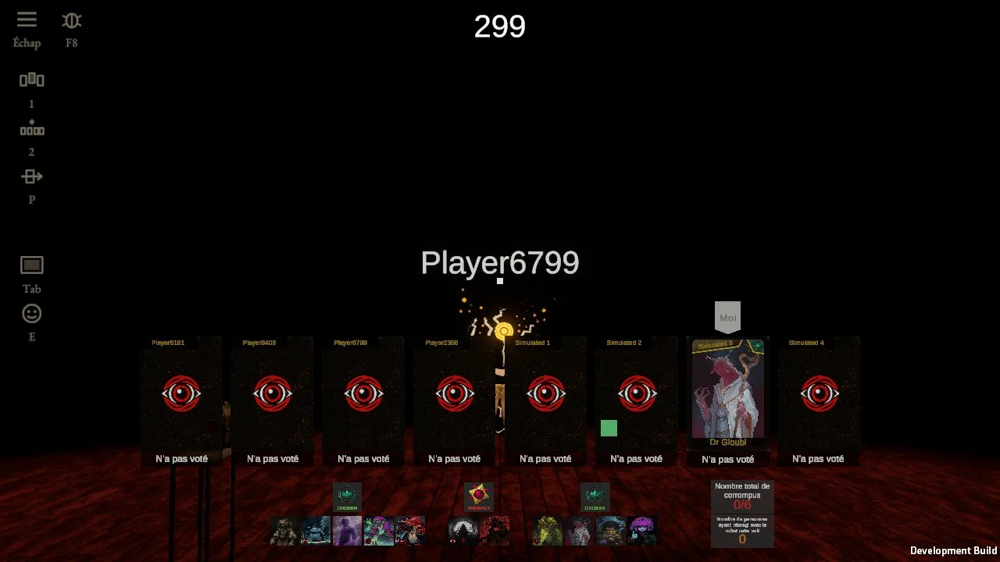
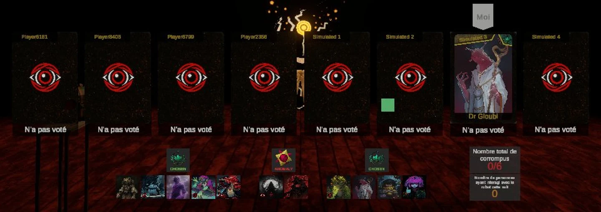

Le jour, les cartes des joueurs (touche 1) et les rôles de la partie avec leurs deux compteurs (touche 2) quittent la table pour le bas de l'écran. Elles marchent ; ici on cherche à les rendre plus belles et plus lisibles, sans rien perdre de ce qu'elles montrent.
Aujourd'hui (capture du jeu, vote du jour 1, partie autoplay du 28/10) :


Ailleurs : la main de Hearthstone et de Balatro (cartes en éventail qui se chevauchent, celle qu'on survole se redresse et grandit : beaucoup de cartes, peu de place) ; Inscryption (les cartes restent des objets, pas une interface posée dessus) ; la feuille de personnages de Blood on the Clocktower et Townsquare (les rôles de la partie rangés par camp, un seul bloc qu'on lit d'un coup d'œil).
La scène, sur toutes les images : vote du jour 2, huit joueurs. Tu es Poyo (Dr Gloubi, ta carte est retournée, « Moi » au-dessus). Steve, Brandon, Kiwi et Mathis ont voté. Composition : 5 Élus, 2 Anomalies, le Robot ; 1 corrompu sur 6, personne n'a touché le Robot cette nuit. Survole les cartes et les portraits ; 1 et 2 ouvrent et ferment les rangées (clavier ou boutons sous chaque image).
Sans question : les cartes restent les vraies cartes du jeu (leur art, leurs marques, leur survol) ; le fond est un rendu du jeu avec les chats plus proches qu'aujourd'hui, seulement pour le contexte. Une section par rangée : la suivante assemblera l'écran entier.
Même carte partout (celle d'aujourd'hui), seule la place change.
Huit grandes cartes côte à côte, la plaque de vote dessous.
Les cartes se chevauchent et s'ouvrent en arc ; celle qu'on survole se redresse et grandit. La rangée prend moitié moins de large.
Quatre cartes à gauche, quatre à droite : le chat d'en face (et l'enchaîné, au milieu) n'est plus caché.
Cartes aux deux tiers ; on les lit en les survolant, elles doublent de taille.
Même ligne droite partout ; le pseudo, le vote et le dos changent.
Pseudo en petit dans la bande du haut, « A voté » ou « N'a pas voté » sur la plaque.
Le pseudo passe en grand sur la plaque sous la carte ; « A voté » monte dans la bande du haut, vide tant qu'il n'a pas voté.
Sur une carte inconnue, l'œil devient petit et le pseudo s'écrit au milieu : les rôles connus ressortent tout seuls.
Plus de plaque : « A voté » s'écrit au pied de la carte de ceux qui ont voté, rien chez les autres.
Mêmes cartes partout (celles d'aujourd'hui) ; les compteurs restent ceux d'aujourd'hui, ils ont leur section.
Portraits nus par camp, le logo du camp dans un carré au-dessus.
Les rôles sur une bande du cuir du grimoire, chaque camp derrière son logo, portraits cerclés d'or.
Les portraits d'un camp se chevauchent sous son logo ; survoler le paquet l'étale.
Les rôles quittent le bas pour le bord droit : les cartes descendent tout en bas, le centre se dégage.
« Nombre total de corrompus » et « Nombre de personnes ayant interagi avec le robot cette nuit ». Survole-les.
Deux boîtes grises empilées, la phrase entière et le chiffre.
Les corrompus près des Anomalies, avec le symbole de la corruption ; le chiffre du Robot sur son portrait. La phrase apparaît au survol.
Sans boîte, au bout de la rangée : « Corrompus 1/6 », « Robot cette nuit 0 ».
Au bout de la rangée, le symbole de la corruption et le Robot, chacun avec son chiffre en grand ; la phrase au survol.